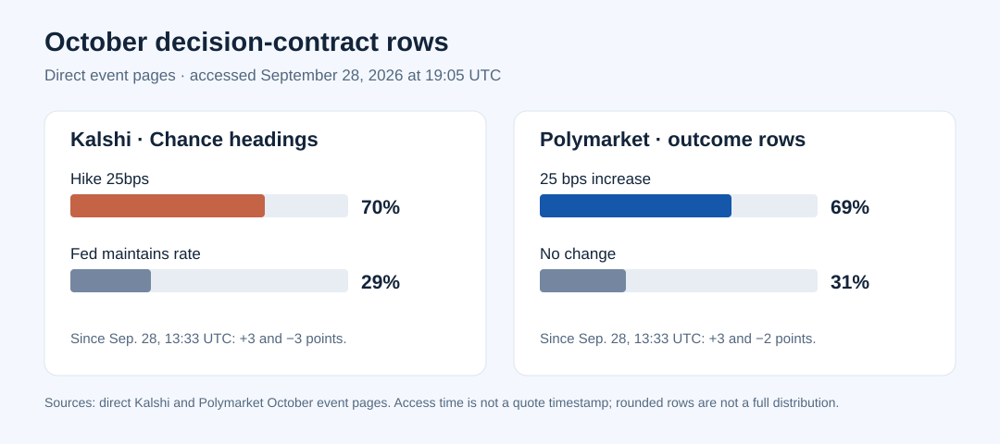

Fed Decision Watch
October contract check: Kalshi 70% hike, Polymarket 69%
At 19:05 UTC on September 28, Kalshi showed 70% for “Hike 25bps” and 29% for “Fed maintains rate.” Polymarket showed 69% for a 25 bp increase and 31% for no change. Each is a separate October event-contract reading, not a shared forecast.
Official September result
The FOMC statement records a 25 bp increase to a 3.75%–4.00% target range, approved 12–0.
Kalshi October event page
70% · Hike 25bps
29% · Fed maintains rate
Named Chance headings at 19:05 UTC. Since September 28 at 13:33 UTC: hike +3 points; maintain rate −3 points. The page also showed Hike >25bps at 2% and two more outcomes.
Polymarket October contract
69% · 25 bp increase
31% · No change
Direct rows at 19:05 UTC. Since September 28 at 13:33 UTC: increase +3 points; no change −2 points.
CME FedWatch
No current October figure shown.
CME describes FedWatch as futures-implied; its direct live grid was unreadable.

What changed
Since the September 28, 13:33 UTC pool check, Kalshi’s named hike heading is up 3 percentage points and maintain rate down 3 points. Polymarket’s named increase row is up 3 points and no change down 2 points. Prices between access times were not observed.
No confirmed catalyst
We did not match an official release or Fed communication to these changes. The event-page rows do not reveal why traders changed prices.
What does this answer?
1. Identify the measure
Is it a named event contract or a futures-implied calculation? Do not combine them.
2. Read the outcome and time
Check the contract rule, exact outcome, and access time. An October row is not a year-end path.
3. Check the asset claim separately
A stock or bond explanation needs a time-matched asset series, a horizon, and competing causes. This page does not supply those.
Next official dates
- Sep. 29 · 10:00 ETBLS Job Openings and Labor Turnover Survey for August.
- Sep. 30 · 08:30 ETBEA Personal Income and Outlays for August.
- Oct. 2 · 08:30 ETBLS Employment Situation for September.
- Oct. 7 · 14:00 ETFOMC minutes for the September 15–16 meeting.
- Oct. 28 · 14:00 ETFOMC statement; press conference at 14:30 ET.
Official calendars: Federal Reserve · BLS · BEA. Market pages: Kalshi October event · Polymarket October event.